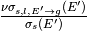
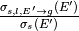
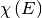

2.1. Overview of Files
To provide the input parameters for NDPP, there are two input files required:
ndpp.xml, and a cross_sections file. The ndpp.xml file provides NDPP with
the options the user wishes to use when processing a set of nuclides. This
file must be named ndpp.xml. The set of nuclides to be pre-processed is
provided in the cross_sections file, which can be named however the user wishes,
but typically is named cross_sections.xml.
This file is very similar to the cross_sections.xml file used by OpenMC,
and the OpenMC cross_sections.xml file can be read directly by NDPP as a good
starting point. If an explicit cross_sections.xml file is not provided
(and the path and filename provided in ndpp.xml), then the default
cross_sections file referenced by the CROSS_SECTIONS environment
variable will be used. For most cases this means that the user’s entire
cross-section library (in the default cross_sections.xml file) will be
processed, unless a reduced set is provided with a local cross_sections file.
2.2. NDPP Options Specification – ndpp.xml
All calculational parameters and desired output options are specified in
the ndpp.xml file. In the following discussion, if a default value is listed for a
parameter, then that is the value which NDPP will use if the parameter is not
provided in the input file.
2.2.1. <scatt_type> Element
The <scatt_type> element has no attributes and has an accepted
value of “tabular” or “legendre”. If set to “tabular”, the incoming
energy-to-group scattering distributions will be output in a tabular format
with the number of bins defined by the <scatt_order> element. If this
element is set to “legendre”, the Legendre moments of the angular distribution
will be output with the scattering order defined in the <scatt_order> element.
Default: legendre
NOTE: The tabular format has not yet been implemented in NDPP
2.2.2. <scatt_order> Element
The <scatt_order> element has no attributes and contains a single integer.
As discussed in the <scatt_type> section, the <scatt_order> element
provides either the number of tabular bins or the scattering order to NDPP,
depending on the value of <scatt_type>.
Default: 5
2.2.3. <nuscatter> Element
The <nuscatter> element has no attributes and has an accepted value of
“true” or “false”. If set to “true”, then the library produced by NDPP will
contain a dataset representing the total production of neutrons due to scatter
(that is, ).
This data will be included in addition to the standard scattering data
().
If “false”, then the scattering production of neutrons will not be included.
Default: True
2.2.4. <mu_bins> Element
The <mu_bins> element has no attributes and contains a single integer. This
value represents the number of angular points used when converting the ACE-
format angular distributions to an intermediate tabular representation. This
intermediate representation is the data which is numerically integrated by NDPP, and
therefore increasing the number of points increases the accuracy of the results,
however, it comes at a cost of an increase in NDPP memory usage and
computational cost. This parameter does not affect NDPP processing of thermal
scattering tables. This parameter has no impact on the runtime memory or
computational costs of the target Monte Carlo code.
Default: 2001
2.2.5. <freegas_cutoff> Element
The <freegas_cutoff> element has no attributes and accepts a double-precision
number. This number represents the maximum incoming energy (divided by each
library’s value of kT) at which the free gas treatment is disabled. For example, if
a value of 800.0 is entered for a library with a kT value of 2.53E-8 MeV, then
the free gas treatment will be disabled at 800.0 * 2.53E-8 MeV,
or 2.024E-5 MeV. If the free gas treatment is desired over the entire energy range
for all nuclides/temperatures to be evaluated, a value of -1 can be provided for
this element. To disable the free gas treatment, a value of 0.0 can be entered.
This cutoff value applies to all nuclides in the cross_sections.xml file, but can
be overridden on a per-nuclide basis in the cross_sections.xml file. This
parameter does not affect NDPP processing of thermal scattering tables.
Default: 400.0
2.2.6. <cross_sections> Element
The <cross_sections> element has no attributes and simply indicates the path
to an XML cross section listing file (usually named cross_sections.xml).
Default: The CROSS_SECTIONS environment variable will be used to
find the path to the XML cross section listing.
2.2.7. <energy_bins> Element
The <energy_bins> element provides the energy group structure to NDPP.
<energy_bins> simply contains a list (in increasing order) of
bounding energies for a number of groups. The list must be in increasing order
to avoid errors during the execution of NDPP. For example, if this element is
specified as <energy_bins> 0.0 1.0 20.0 </energy_bins>, then two energy
groups will be created, one with energies between 0 and 1 MeV and the other with
energies between 1 and 20 MeV.
2.2.8. <integrate_chi> Element
The <integrate_chi> element has no attributes and has an accepted value of
“true” or “false”. If set to “true”, all fissionable nuclides will have their
fission neutron spectrum () integrated over the
provided energy group structure and written to the output files.
If “false”, then the integration will not be performed.
Default: True
2.2.9. <thinning_tol> Element
The <thinning_tol> element has no attributes and accepts a single
floating-point number representing the percent tolerance for thinning the
incoming energy grid of the pre-processed data. The thinning algorithm applied
essentially discards incoming energy grid points which provide the same
result to within the error of the provided thinning tolerance when the
neighboring points are interpolated across. The larger the provided value is the
smaller the memory footprint of the resultant data library, but with decreased
accuracy.
Default: 0.0
2.2.10. <print_tol> Element
The <print_tol> element has no attributes and accepts a single
floating-point number. This element is used to set the minimum value of
group-to-group transfers that will be printed. Increasing this value
decreases the output file size but can reduce accuracy of the resultant
preprocessed data library.
Default: 1.0E-8 (1.0E-6%)
2.2.12. <threads> Element
The <threads> element has no attributes and contains a single integer. This
value is the number of OpenMP threads to use. This element has no effect when
NDPP is not compiled with OpenMP support.
Default: Use all available threads (or one, if NDPP was not compiled with
OpenMP support).
2.3. Cross-Section Library Specification – cross_sections.xml
The cross_sections.xml file uses a very similar format to that used in OpenMC
with deviations noted here. For a full discussion of the format
and generation strategies see the OpenMC manual discussion.
2.3.1. <freegas_cutoff> Attribute
The <freegas_cutoff> attribute is a member of the <ace_table> element and
accepts a single floating-point number. The value provided will override the
value of freegas_cutoff specified in the ndpp.xml file for the library it is
an attribute of. If none is provided, the value provided in the ndpp.xml input
will be applied. The syntax for this attribute is the same as is used for the
freegas_cutoff element discussed above. This attribute has no affect on thermal
scattering tables.
As an example (which could be commonly utilized), the following shows how to set
the H-1 free gas treatment to be applied over the entire energy range:
<ace_table alias="H-1.70c" freegas_cutoff="-1.0" awr="0.999167" location="1" name="1001.70c" path="endf70a" temperature="2.5301e-08" zaid="1001"/>